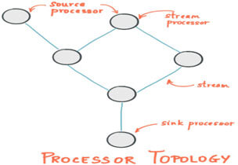
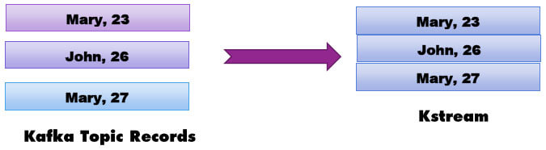
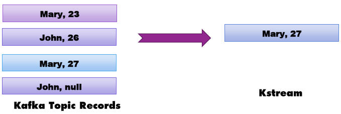
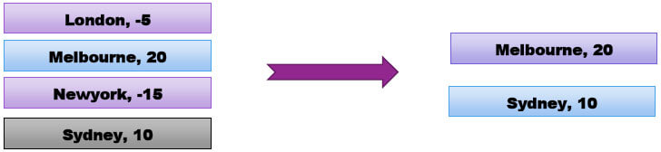
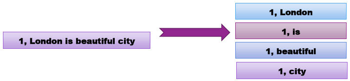
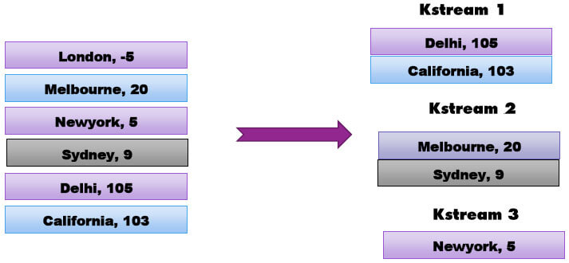
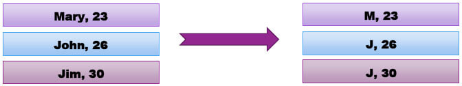
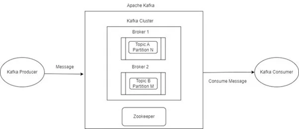

Kafka Stream is a transformation library that comes with Kafka binary for analyzing and processing data stored in Kafka topics. It is used for data transformation, enrichment, fraud detection, monitoring and alerts.
Kafka streams are standard Java applications that take data from Kafka topics to process and analyze and then store results back to Kafka topics. It is highly scalable, fault-tolerant, requires no separate cluster, and leverages the full capabilities of Kafka. For those looking to implement or optimize Kafka streams in their projects, our Java development company can provide the necessary expertise to ensure seamless integration and performance.
Moreover, it is the only streaming library semantics in the streaming world that has exactly once and is a true streaming framework because it processes one record at a time rather than micro batches. It works for applications of any size either small or big.
Kafka Stream Vs other Streaming Libraries
There are many streaming libraries in the market today such as Spark Streaming, Nifi, and Flink etc. All these libraries are constantly evolving and it entirely depends on your use case to decide which one to select.
| Kafka Streams | Spark Streaming | Flink | Nifi | |
|---|---|---|---|---|
| Cluster Required | No | Yes | Yes | Yes |
| Real time Streaming | Yes | No | Yes | Yes |
| Micro Batches | No | Yes | No | No |
| Semantics | Exactly Once | At least Once | At least Once | At least Once |
| Implementation | Code based | Code based | Code based | Drag & drop |
Who Uses Kafka Streams For Real-Time Streaming?
Many companies are using Kafka streams to build their real time streaming pipeline.
We support you by providing a thorough knowledge about utilization of kafka streams.
Newyork Times is using Kafka Stream to store & distribute their content in real-time to their readers.
Pinrest is using Kafka Streams to predict the budget of their advertising infrastructure.
Rabobank is one of the top banks in the Netherlands, and is using Kafka streams to alert customers in real-time for financial events.
Kafka Stream Core Concepts

-
Processor Topology
Kafka streams application is represented in the form of processor topology that is simply a graph of stream processors connected with streams. It defines the computation logic of your application and how your input data is transformed to output data.
-
Source Processors
This is a special processor that takes data directly from kafka topics and then forward that data into downstream processors. It does not do any transformations, it just reads data from the kafka topic and creates a stream out of it to send it to further processors in the topology for transformation.
-
Sink Processors
This processor takes transformed or enriched data from upstream processor and send it to Kafka topics
-
Stream
Sequence of fully ordered immutable data records that can be replayed in case of failures. These data records correspond to records in Kafka topic.
-
Stream Processor
It is a node in processor topology that transforms incoming streams record by record and then creates a new stream from it.
How to Write Topologies?
We can write topologies in two ways:
-
High level DSL:
It is high-level API, simple, most common transformation operations such as filter, map, join etc
-
Low Level Processor API:
Low-level API used to implement complex logic but rarely needed.
Mandatory Configurations for Kafka Streams
| bootstrap.servers | Needed to connect to kafka at port 9092 |
| Auto.offset.reset.config | Earliest- to consume topic from start Latest – to consume topic from latest offset |
| Application.id | Id given to kafka stream application |
| Default Key Serde [Key/Value] | Serialization & deserialization for keys |
| Default Value Serde [Key/Value] | Serialization & deserialization for values |
Kafka Stream Maven Dependencies
Setting up the Properties
Build KStream from Kafka Topic
Ktables/Kstreams
Kstream is an infinite, unbounded stream of immutable data streams. Whenever a new record is added to Kafka topic, that record is appended to Kstream.

Ktables are similar to database tables. It deletes the records on null value, it updates the records if the same key appears again. It is used if you want to apply unique constraints on the data like the primary key in the database table. In the below example, Ktables updated the “Mary” record from value 23 to 27 and deleted the record with key as “john” since it came with null value.

MapValues
It applies the operation on the values of the records. For example, I want to change the stream data into uppercase. This function is supported in both Kstream and Ktables.
Filter/FilterNot
Filter applies some condition on Kstreams/Ktables to get the filtered stream whereas FilterNot is completely opposite of Filter. Each record produces zero or one record depending upon whether it satisfies the condition. Below statement filters out all values that are less than or equal to zero and gives back a new Kstream with values greater than zero.

FlatMapValues / FlatMap
Flatmap takes one record and produces zero,one or more records. FlatMapValues does not change the keys, does not trigger any repartition whereas FlatMap changes the keys and triggers the repartition. Both the operations are for Kstream only.

Branch
Branch splits a Kstream into multiple Kstream based on one or more predicates.
In the above example, predicates are evaluated in order. If a record comes whose value is greater than 100, it will become part of the first Kstream else it will be evaluated for next predicates. If the record does not match any predicate then that particular record will get dropped.
Above operation will create 3 Kstreams with the first one carrying all data greater than 100, second with data between 10 & 100 and third Kstream with data between 0 & 10. All records with negative values will be dropped.

SelectKey
SelectKey assigns a new key to the record. Below operation will assign the first letter of the old key as the new key.

Reading from kafka
We can read data from Kafka as a Kstream or as a Ktable. As discussed earlier, Ktables and Kstreams have differences in terms of how it deals with null values or how it deals with values with the same key.
Writing to Kafka
There are two API’s for Writing to a topic. ”To” method simply writes to a topic and returns nothing whereas the “through” method writes to a Kafka topic and also returns the stream with updated data.
Image source: https://www.dacast.com/blog/video-streaming-protocol/
Interactive Examples and Tutorials
With Kafka Streams, industries can develop and examine data they reach, allowing them to make timely choices and take instant activities. It is predominantly valuable in places like finance, retail, and communications, here the actual data meting out can lead to important modest benefits.
Setting up Kafka Streams
- Setting up Kafka Streams may seem an unnerving job, nonetheless with the correct direction, it could be a simple procedure. We will lead you through the procedure of setting up and setup up Kafka and Zookeeper, the core components that power Kafka Streams, in this step-by-step tutorial that we have prepared for you.
- You will have to start by downloading the newest version of Apache Kafka via the official Apache Kafka website. When it is dl, trail the connection guidelines exactly to the functioning methods. This characteristically includes removing the copied files to an anticipated handbook. Create a stream processing architecture by using the Apache Kafka Streams Domain-Specific Language (DSL) to specify your business logic.
- After some time has passed, you will be required to configure ZooKeeper, which is a centralized service that is deployed over Kafka to maintain configuration data and provide distributed administration. Please ensure that you transfer the most recent stable version of Apache ZooKeeper via the official website and carefully go through the instructions that are provided.
- Immediately after the ZooKeeper has been installed, you will need to make arrangements for a Kafka to work properly. To do this, the ZooKeeper formation file will need to be modified to agree on the linking particulars and ports. When it comes to safeguarding a smooth integration, it is essential to make sure that the ZooKeeper configuration is aligned with the Kafka configuration.
- After the Kafka and ZooKeeper services have been successfully installed and configured, you will be able to begin using them. After executing the required command, begin the procedure of starting ZooKeeper. Next, begin the step of starting Kafka by executing the Kafka server script. During the progression of computer setup, it is of the utmost importance to keep a close eye on the console output for any possible mistakes.
Get in touch with us so that we can make your streaming data valuable for commercial purposes and create revenue.
Error Handling and Fault Tolerance

Image source: https://www.bmc.com/blogs/apache-kafka-exception-handling-best-practices/
In the area of Kafka Streams taking acre of mistakes mentions the ability of the application to manage many kinds of mistakes which could happen during data processing. Such mistakes could vary from easy data format problems to larger compound situations such as network disappointments or inaccessibility of possessions.
Kafka Streams improves the development of the app with the help of Kafka creator and customer frameworks and harnesses the inherent characteristics of Kafka to offer data analogy, decentralized collaboration, tolerance for disappointments, and working flexibility. This section explains the underlying devices of Kafka Streams.
- Kafka Streams also just the kafta are closely interconnected when it comes to concurrency.
- A stream divider is a completely well-ordered series of data records that corresponds to a Kafka topic partition.
- All of the data records in the data stream agree to a Kafka dealing via a similar topic.
- The arrangement of data in both Kafka and Kafka Streaming is dictated by the keys of data records. This implies that the data is transmitted to specific segments within subjects according to the keys.
The main reason that error handling is important in stream processing is to preserve data integrity. In a Kafka Streaming app, data is treated incessantly and correspondingly, with numerous instances of the app running continuously in case a mistake happens at the time of handling, it is vital to manage it with care to stop data inconsistencies or repetitions.
Possible error possibilities in Kafka
In general, we encounter two types of problems while handling data streams: passing mistakes and non-transient faults.
1. A transitory error is a mistake that happens sporadically or unpredictably. Instances of such problems include a transient system disruption or briefly inaccessible endpoints. A clear and straightforward approach in this situation is to attempt the processing again.
2. Non-transient failures have a higher level of persistence, as seen by the repeated occurrence of similar faults in Kafka messages, regardless of the number of retry attempts. Instances of such problems include flaws in app processing reasoning and analyzing faults. It is necessary to provide a mechanism that can effectively manage these mistakes when they arise, allowing for automated recovery when feasible or system shutdown when recovery is not possible.
Failure managing, attempting, and restoring are critical in ensuring the resilience of real-time systems that rely on essential data events and won’t tolerate all of the data loss.
Concept of State Stores in Kafka Streams
Kafka Streams is a library offered by Apache Kafka that empowers PL SQL developers to handle and examine data streams in real time. Kafka Streams excel in effectively handling and controlling stateful data by leveraging state storage. Kafka Streams state stores offer a robust framework for maintaining and using stateful info throughout stream processing. They facilitate the storage and retrieval of interim findings, execution of intricate calculations, and preservation of context throughout the analysis of actual data streams.
State stores allow Kafka streams apps to be ahead in event dispensation and hold crateful processes. With the capability to stow and make use of data, designers could use functions like real-time combinations, meeting windows, and connexions which is the holding of state.
Kafka Streams apps benefit from fault tolerance and flexibility via the usage of state storage. State storing offers uninterrupted operation by saving an app state to permanent storage, like Kafka topic or a RocksDB database, in the event of errors or restarting. This guarantees the dependability and robustness of your stream processing processes.
Aegis Softtech data platform is the only one of its kind that gives businesses the ability to profit on real-time data at scale without compromising operational performance.
Ways to inquire about the current condition of the application?
Interactive inquiries pertain to an app's capacity to actively obtain and change data in response to user inputs or specified situations. This feature enables developers to design communicating and tailored experiences that effectively captivate and fulfill consumers. The era of static, uniform apps is now a thing of the past. Modern users have a growing expectation for programs to dynamically adjust to their requirements and preferences without any delay.
Interactive Queries lets an individual power the state of the This results in enhanced functionality and engagement for companies, as well as the possibility of entering new markets and capitalizing on the user bases of other popular programs that are already in existence.. The Kafka Streams API allows the application could be queryable.
1. State of the area
An application, for example, might query the nearby handles section of the state and straight query its specific local state laws. The way it does not involve accessing the Kafka Streams API, it is possible to take advantage of the consistent local data in extra locations inside the app's code. To ensure that the underlying state stores will never be modified out-of-band, querying state stores is continuously treated as read-only. This means that you are unable to add new items to the state stores. The matching processor architecture also the contribution data that it acts on should be the only things that may cause state stores to change.
The remote state
Therefore, to query the whole state of your application, you will need to link the different pieces of the state, which include the following:
- Local state retailers must be questioned.
- Identify every instance of your program that is now executing on the internet, as well as their respective state stores.
- Through the use of the internet (for instance, an RPC layer), connect with the examples.
2. Real-Time Analytics and Monitoring
The intake, management, and examination of data flowing as it is being generated are all included in real-time stream processing. This allows businesses to react to measurements and make choices in real-time. The pub-sub architecture and greater number of Kafka have the potential to create the greatest quality for real-time stream processing. After some time, the applications might get an advantage via Kafka by seamlessly combining the real data streams with their replicas. This would provide continuous knowledge and the ability to make adaptable decisions.
Organizations can perform a wide range of real-time analytics operations with the help of Kafka Streams. These operations include filtering, aggregating, transforming, and combining streams of data. The firms themselves can carry out these duties. Through the execution of a wide range of operations on the data streams, it is possible to get substantial insights from them. The capacity to spot trends, identify irregularities, and develop pertinent conclusions is provided to businesses as a result of this.
An overview of the most common Kafka monitoring solutions, including a comparison of their features
When it comes to monitoring Kafka streams, having the appropriate tools in place is very necessary to guarantee the efficient functioning and performance of your data pipelines. In the following part, we will discuss and evaluate a selection of the most widely used Kafka monitoring technologies that are currently available.
1. Confluent Control Center: Confluent Control Center is a service that includes full monitoring solutions for Kafka clusters. It was developed by the same people that were responsible for the creation of Kafka. Own forum email list where we respond to issues about the Confluent Platform as well as inquiries that are broader about Kafka.
2. Graphite is a more straightforward "data logging and plotting tool for continuous data," but Prometheus is an "online time series database management system and monitoring platform." Prometheus is part of a free-to-use alarming and monitoring toolkit that has gained widespread use.
3. Grafana: Grafana is a well-known data presentation tool that may make your Kafka tracking attempts more effective. It is often used in combination with Prometheus.
4. Burrow: Burrow was developed with the express purpose of monitoring Kafka customers, and its primary emphasis is on monitoring the latency that exists between vendors and customers. It helps you detect and manage any bottlenecks or difficulties with performance in your consumer apps by providing insights on customer grouping offsets, lag patterns, and the health of consumers. With these insights, you can better serve those who use your products.
5. LinkedIn Kafka Monitor: The aforementioned monitoring tool, which is owned by LinkedIn, provides extensive metrics and diagnostic functions for Kafka systems via its many functionalities.
We are the backbone for creating architectures and revolutionizing your data handling with streaming capabilities. Embark on your journey with Apache Kafka today!
Best practices for securing Kafka Streams applications
1. Implement comprehensive encryption for all data
Cryptography, which is both free and simple to deploy, is widely available in today's business environment. Given the widespread availability of Public Key Infrastructure (PKI) solutions that are either self-signed or leverage-free services such as LetsEncrypt, there is less justification for allowing unencrypted data to pass through our network infrastructure. Although encryption of communications on your Kafka Cluster is not enabled by default, it may be easily implemented and significantly enhances the security and reliability of your cluster.
2. Verification of identity
It is advisable to often change and control access credentials, such as passwords and keys, to reduce the possibility of unwanted entry. Utilizing safe configuration options, disabling unneeded functionality, and keeping software up to date is crucial to avoid possible risks.
3. Authorization
Authorization is of utmost importance in a Kafka Streams context since it is essential for ensuring the security and integrity of data. Given the growing popularity of event-driven architectures, it is crucial to provide strong authorization systems. An essential component of permission is to guarantee that only authorized persons or systems are granted access to the data being sent over the Kafka Streams.
Strategies for scaling Kafka Streams applications
Software deployment means different things in various organizations. It involves teams and the usage of diverse applications. Overall, scaling is an important aspect of production deployment with practices that change the system to upgrade or keep it running smoothly. There is a need for basic to multi-service deployment which matters within the boundaries of a production environment. Most applications run on version dependencies to avoid risks.
Kafka Streams is an agile streaming library with multiple resources. Its ground architecture impacts the applications. It begins with a basic unit of parallelism, a stream task. Developers can optimize the app logic with the latest processor topology. As a technique, this framework focuses on the existing optimization of data from the Data Stream Management System and the data stream processing files.
Key strategies required for processes include:
- Consistency to sustain data loss.
- Availability of objective for service.
- Performance during high latencies.
Deployment options and considerations for running Kafka Streams
A well-trained model of Apache Kafka enhances the scalability in a production environment. If the apps offer real-world knowledge, they can be a game changer in the production environment. With the capability of machine learning development solutions it is easier to evaluate unorganized data sets. Now it also includes recognition of images and speech which are valued in the production environment. It is a step above the traditional Python Java or Net programming systems.
Kafka Streams can detect fraud, and cross-selling and also offer predictive maintenance. All analytical models are trained to offer build-up algorithms, and options to validate, operate and monitor. Improvements are done in a continuous loop or as the updates are required for streaming.
Understanding the backward and forward compatibility of Kafka Streams applications Backward Compatibility.
Comprehending backward compatibility is straightforward. Challenging to sustain. The concept is that your program is compatible with the preceding version, hence the query pertains to the precise definition of "works". Work refers to the physical or mental effort exerted to achieve a certain task or goal. The software is fully operational without any errors or issues. However, it is important to differentiate between breaking changes, which might cause disruptions, and non-breaking changes, which do not impact functionality.
Forward Compatibility
Forward compatibility is the ability of a system or technology to be compatible with future versions or updates without requiring significant modifications or adaptations. Consequently, this implies that we will be able to adapt to forthcoming alterations. This task seems to be challenging and so it is. Nevertheless, there are measures we may take to enhance the feasibility of forward compatibility.
Performance Tuning and Optimization
1. Ensuring an optimal number of divisions, neither excessive nor insufficient.
Excessive partitioning may lead to increased overhead and resource use. Every partition necessitates memory and processing capacity to manage messages, and an excessive quantity of partitions might burden the cluster and result in heightened delay.
2. The enigma around the data format
Kafka perceives the messages generated as a series of bytes without any further information.
3. Prevent the occurrence of the dual-write issue when writing data to downstream systems
To address this obstacle, it is essential to execute a resilient and meticulously planned data integration strategy.
4. Removing data entries in Kafka with tombstones
Tombstones serve as distinct notifications that designate a record as removed, without actually eradicating it from the Kafka log.
5. Optimize Kafka producers to enhance performance and ensure dependability
Enlarging the batch size may enhance throughput since it requires fewer requests to deliver an equivalent quantity of data.
Create connections between data sources and sinks by using Aegis Softtech Apache Kafka
Connect service, which is a fully managed solution.
Industry-specific use cases of Kafka
The success of Kafka is mostly attributed to its influential capabilities and adaptable nature. This technology has been empirically shown to be both scalable and fault-tolerant. Kafka is very advantageous in situations that need instantaneous data processing and tracking of application activities, as well as for monitoring.
It is not suitable for doing real-time data processing, data storage, or for basic task queuing purposes.
1. Netflix
Netflix adopts Apache Kafka as the established and widely accepted solution for its eventing, communication, and processing of stream requirements. Kafka serves as a conduit for all point-to-multi and Netflix Studio-wide communication. Netflix relies on its outstanding reliability and continuously scalable, multiple-tenant design to operate its operating systems effectively.
2. Amazon
By using Kafka, Amazon successfully revolutionized its data processing infrastructure. They created a resilient and adaptable event streaming framework that enabled them to efficiently handle, manipulate, and examine extensive amounts of data instantaneously. The distributed nature of Kafka guaranteed the reliable delivery of data to the appropriate systems and applications, hence removing any potential points of failure.
3. Instagram
Kafka has consistently achieved effective Apache Kafka installations, ensuring 100% customer satisfaction for Instagram. Consequently, they obtained a competitive edge by promptly recognizing patterns, trends, and so on.
4. Adidas
To integrate source systems and provide teams with the ability to develop immediate time event processing for monitoring, analytics, and analytical solutions, Adidas leverages Kafka as the basis of its Fast Data Broadcasting Platform.
Conclusion
All real-time machine learning processing frameworks are still evolving at a constant pace with new API’s everyday but Kafka streams undoubtedly have an edge over others because of its integration with Kafka, exactly one semantics and its real-time processing power.